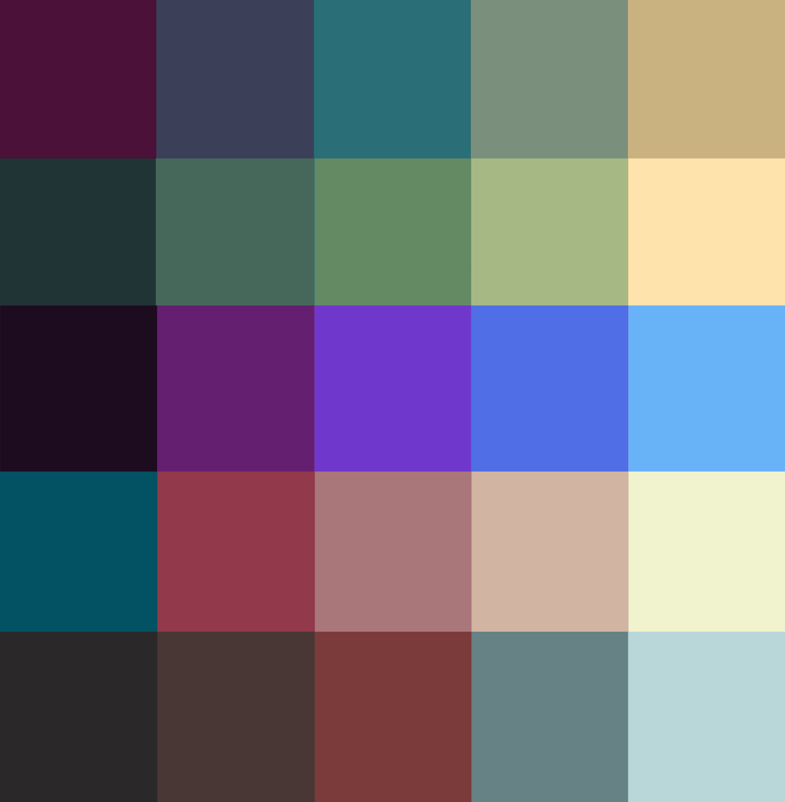

I add my portfolio as another project since I decided to implement this website from scratch using HTML, CSS, and Javascript without using any templates or libraries like Thymeleaf or Bootstrap. The most noteworthy features include the A* pathfinding algorithm on the homepage, the color wave at the top of this section, the user-selectable color palette, the missile battle, and the drawing of circles using the midpoint algorithm. These are interesting programming challenges that bring the website to life and enhance its appearance.
Implementation of the A* pathfinding algorithm. A* is a type of heuristic or informed graph search algorithm. This means it has prior information to make decisions. This prior information is defined as heuristic, and in these pathfinding problems, it is often the Manhattan distance or the Euclidean distance.
This map is an NxN rectangle in which, upon generation, each cell has a 30% chance of being an obstacle. Every 2 seconds, two points on the map that are not obstacles and have a valid path between them are randomly chosen. Then, the algorithm is simulated by drawing the cells belonging to the closed list and the open list (algorithm concepts). When it finishes, the solution path is highlighted.
This color wave has been generated based on a list of colors, specifically five, which are the colors of the active color palette. With these colors, an interpolation is performed to obtain the rest of the intermediate colors until reaching the number of rows. That is, if we have 25 rows in the wave and 5 source colors, 4 colors will be generated between each original color, so that 5 original colors plus 20 interpolated colors add up to 25, which is the number of rows in the wave.
In the header color waves (those that appear at the beginning of the page), there are 180 rows, so they are hardly noticeable. However, this example has 32 rows.
By generating colors in an interpolated manner depending on the number of destination rows and the source color list, you can create infinite waves of different colors and rows.
In the Missile Battle, the side that manages to get more missiles to the opposite side wins. The score is reflected in the background. The randomness in the generation of missiles, i.e., direction, instantiation probability, and speed, makes it interesting to see which side will be luckier and secure the victory.
The colors of the web elements and animations depend on the currently selected palette, providing a customizable and theme-centric visual experience.
Midpoint algorithm for circles?
Sorting algorithms visualization?
Mini-game in Phaser?